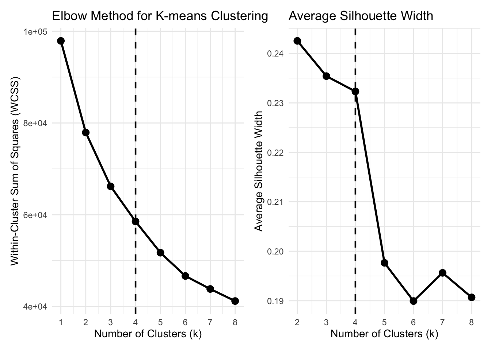
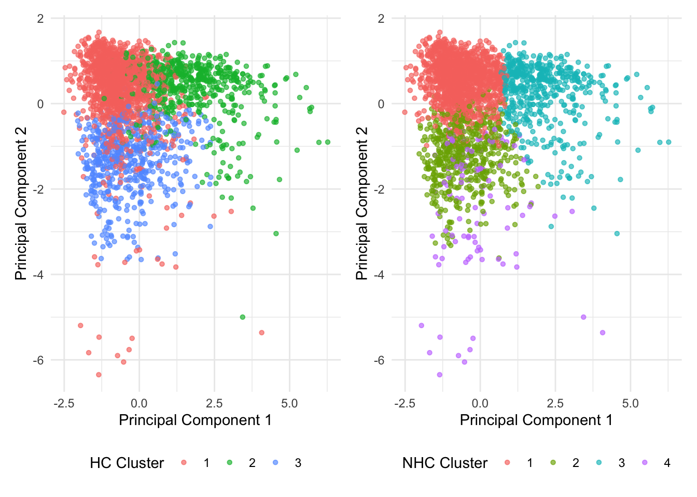
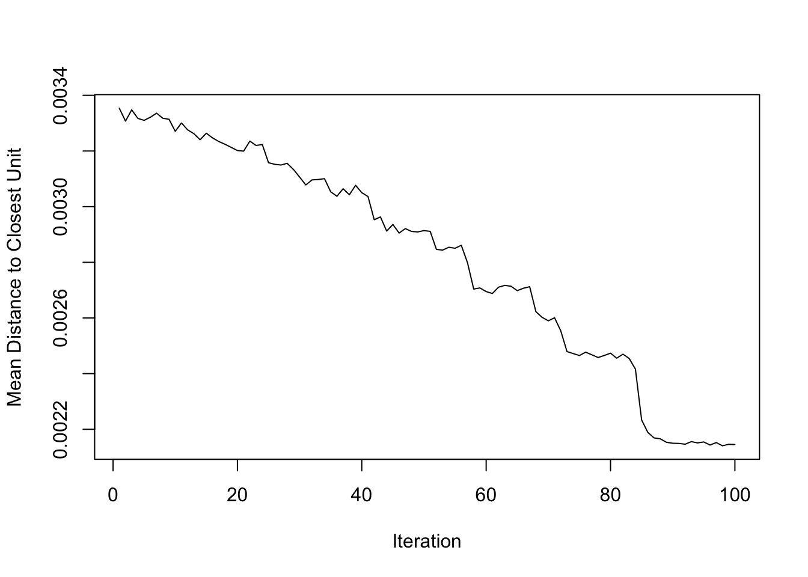
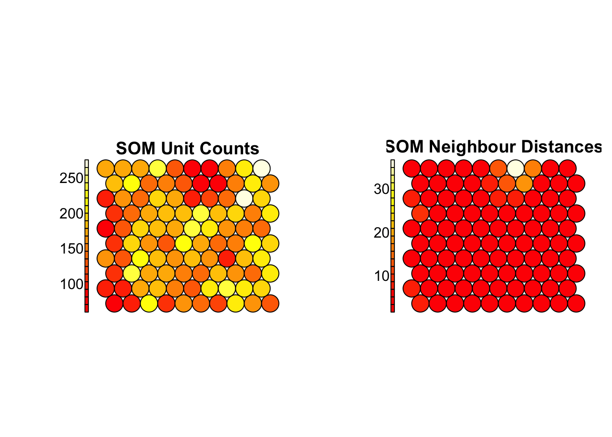
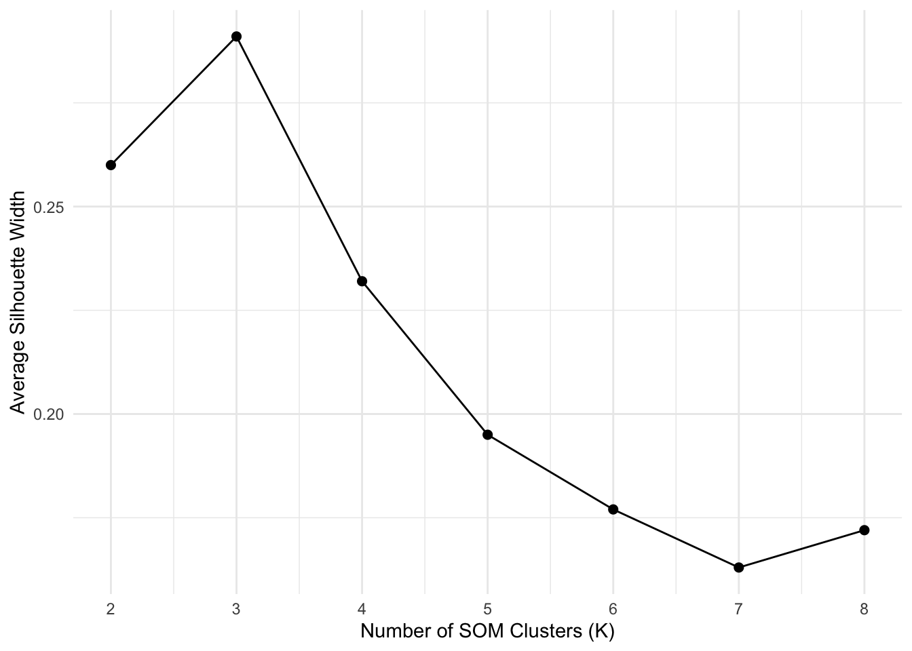
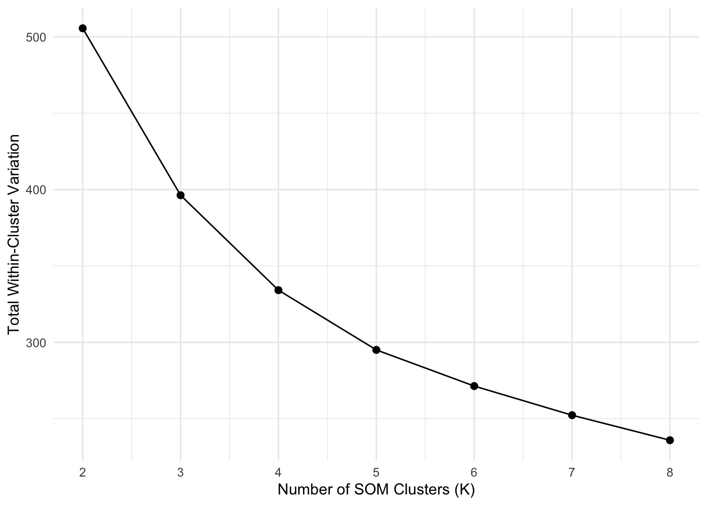

Warning: package 'ggplot2' was built under R version 4.3.3
Warning: package 'tibble' was built under R version 4.3.3
Warning: package 'purrr' was built under R version 4.3.3
Warning: package 'lubridate' was built under R version 4.3.3
── Attaching core tidyverse packages ──────────────────────── tidyverse 2.0.0 ──
✔ dplyr 1.1.4 ✔ readr 2.1.5
✔ forcats 1.0.0 ✔ stringr 1.5.1
✔ ggplot2 3.5.2 ✔ tibble 3.3.0
✔ lubridate 1.9.4 ✔ tidyr 1.3.1
✔ purrr 1.1.0
── Conflicts ────────────────────────────────────────── tidyverse_conflicts() ──
✖ dplyr::filter() masks stats::filter()
✖ dplyr::lag() masks stats::lag()
ℹ Use the conflicted package (<http://conflicted.r-lib.org/>) to force all conflicts to become errors
library(janitor)
Warning: package 'janitor' was built under R version 4.3.3
Attaching package: 'janitor'
The following objects are masked from 'package:stats':
chisq.test, fisher.test
library(skimr)library(naniar)
Attaching package: 'naniar'
The following object is masked from 'package:skimr':
n_complete
library(scales)
Warning: package 'scales' was built under R version 4.3.3
Attaching package: 'scales'
The following object is masked from 'package:purrr':
discard
The following object is masked from 'package:readr':
col_factor
library(patchwork)
Warning: package 'patchwork' was built under R version 4.3.3
library(knitr)library(kableExtra)
Attaching package: 'kableExtra'
The following object is masked from 'package:dplyr':
group_rows
library(GGally)
Warning: package 'GGally' was built under R version 4.3.3
library(cluster)
Warning: package 'cluster' was built under R version 4.3.3
library(factoextra)
Welcome! Want to learn more? See two factoextra-related books at https://goo.gl/ve3WBa
library(sf)
Warning: package 'sf' was built under R version 4.3.3
Linking to GEOS 3.13.0, GDAL 3.8.5, PROJ 9.5.1; sf_use_s2() is TRUE
library(tmap)
Warning: package 'tmap' was built under R version 4.3.3
library(kohonen)
Attaching package: 'kohonen'
The following object is masked from 'package:purrr':
map
# Set Seed for Reproducibility:set.seed(2026)
EDA and Data Preprocessing
Data Loading and Raw Structure
# Loading the data:load("airbnbListings.RData")# Storing the loaded data object:raw_data <- Airbnb_Excel_Lab_AAMB_Co# Chhecking the class and dimensions of the data:class(raw_data)
[1] "tbl_df" "tbl" "data.frame"
dim(raw_data)
[1] 16317 40
# Inspection of the raw variable typesstr(raw_data)
# Remove identifier, label and derived/redundant variables before missing data assessment:derived_vars <-c(# Identifier and label variables not useful for clustering:"id","host_id","host_name_trimmed_proper","picture_url",# Duplicated or less complete location variable:"neighbourhood_proper_trim",# Derived/redundant host count variable:"host_total_listings_count",# Room type is treated as a simplified/derived listing classification:"room_type_proper_trim",# Bedroom count is treated as a derived/overlapping capacity measure:"bedrooms",# Time-window booking variables derived from booking activity:"booked_30","booked_60","booked_90","booked_365",# Revenue variables derived from price and booking activity:"revenue_30","revenue_60","revenue_90","revenue_365",# Shorter availability windows derived from the same availability concept:"availability_30","availability_60","availability_90",# Review count variants derived from the overall review activity concept:"number_of_reviews_ltm","number_of_reviews_l30d","reviews_per_month")# Create the reduced working dataset:airbnb_reduced <- airbnb |>select(-any_of(derived_vars))
Highly Correlated Variable Removal:
# Identify highly correlated numeric variables:numeric_data <- airbnb_reduced |>select(where(is.numeric))# Calculate absolute correlation matrix:cor_matrix <- numeric_data |>cor(use ="pairwise.complete.obs") |>abs()# Convert correlation matrix to long format:high_corr_pairs <-as.data.frame(as.table(cor_matrix)) |>rename(Variable_1 = Var1,Variable_2 = Var2,Correlation = Freq ) |>filter( Variable_1 != Variable_2, Correlation >=0.90 ) |>mutate(Pair_ID =pmap_chr(list(as.character(Variable_1), as.character(Variable_2)),~paste(sort(c(..1, ..2)), collapse ="_") ) ) |>distinct(Pair_ID, .keep_all =TRUE) |>select(-Pair_ID) |>arrange(desc(Correlation))# Specify variables to remove based on high correlation and interpretability:high_corr_vars <-c("beds","bathrooms","review_scores_accuracy","review_scores_cleanliness","review_scores_checkin","review_scores_communication","review_scores_location","review_scores_value")# Create the Further Reduced Working Dataset:airbnb_reduced <- airbnb_reduced |>select(-any_of(high_corr_vars))
The modelling stage should use the cleaned dataset rather than the raw extract. Identifier and descriptive variables such as listing IDs, picture URLs, host names and raw text labels should be excluded because they do not provide meaningful distance-based structure. Monetary and count variables should be log-transformed where they are strongly right-skewed. Invalid values such as non-positive prices, impossible availability or booking values, and implausible coordinates should either be removed or corrected only if a reliable correction rule exists. Missing values should be handled before clustering because distance-based methods cannot use incomplete rows. Categorical variables such as room type, property type and neighbourhood should be converted to factors, rare categories should be grouped, and dummy variables should be created. Finally, all numeric and dummy variables used for hierarchical clustering, non-hierarchical clustering and SOMs should be standardised so that variables measured on larger scales do not dominate the clustering solution.
Hierarchical clustering
# Retain raw variables for cluster profiling later:airbnb_profile_data <- airbnb_reduced# Set Seed for Reproducibility:set.seed(2026)
Hierarchical Clustering Sample
# Specify reproducible sample size for HC:hc_sample_size <-min(2500, nrow(airbnb_model_data))# Draw a reproducible sample:hc_sample_index <-sample(seq_len(nrow(airbnb_model_data)),size = hc_sample_size)# Create HC modelling and profiling datasets:hc_data <- airbnb_model_data |>slice(hc_sample_index)hc_profile_data <- airbnb_profile_data |>slice(hc_sample_index)# Create sample overview table:hc_sample_overview <-tibble(Dataset ="Hierarchical clustering sample",Observations =nrow(hc_data),Variables =ncol(hc_data))# Output sample overview table in LaTeX:hc_sample_overview_latex <- hc_sample_overview |>kable(format ="latex",booktabs =TRUE,caption ="Dataset Used for Hierarchical Clustering",align =c("l", "r", "r"),escape =TRUE ) |>kable_styling(latex_options =c("hold_position", "scale_down") )
Warning: 'xfun::attr()' is deprecated.
Use 'xfun::attr2()' instead.
See help("Deprecated")
# Define linkage methods to compare:hc_linkage_methods <-c("single","complete","average","centroid","ward.D2")# Fit hierarchical clustering models:hc_models <- purrr::map( hc_linkage_methods, \(method_name) {hclust( hc_dist_euclidean,method = method_name ) })# Name the list of models:names(hc_models) <- hc_linkage_methods
# Save Objects for Later Non-Hierarchical and SOM Comparison:hc_results <-list(sample_index = hc_sample_index,model_data = hc_data,profile_data = hc_profile_clustered,distance_matrix = hc_dist_euclidean,linkage_models = hc_models,final_method = hc_final_method,final_model = hc_final,k_evaluation = hc_k_evaluation,best_k = hc_best_k,clusters = hc_cluster,cluster_sizes = hc_cluster_sizes,numeric_profile = hc_numeric_profile,categorical_profile = hc_categorical_profile)saveRDS( hc_results,file ="hc_results_airbnb.rds")
Non-hierarchical clustering
K-means
# Set seed for reproducibilityset.seed(123)# Create vector to store modelskm <-vector('list', 8)# Number of initiations, tuned manuallynstart <-25# Fit kmeans models over the k valuesfor (i in1:8) { km[[i]] <-kmeans(airbnb_numeric_scaled, i, nstart=nstart, iter.max =100) }
Warning: Quick-TRANSfer stage steps exceeded maximum (= 815850)
Warning: Quick-TRANSfer stage steps exceeded maximum (= 815850)
# Extract within cluster variation for each kwcss <-sapply(km, function(x) x$tot.withinss)# Extract the silhouette scores for each ksilhouette_scores <-sapply(2:8,function(k) { sil <-silhouette( km[[k]]$cluster,dist(airbnb_numeric_scaled) )mean(sil[, 3]) })# Create dataframes for plottingelbow_df <-data.frame(k =1:8,WCSS = wcss)sil_df <-data.frame(k =2:8,silhouette = silhouette_scores)k_optimal <-4# Elbow plotelbow_plot <-ggplot(elbow_df, aes(x = k, y = WCSS)) +geom_line(linewidth =1) +geom_point(size =3) +scale_x_continuous(breaks =1:8) +labs(title ="Elbow Method for K-means Clustering",x ="Number of Clusters (k)",y ="Within-Cluster Sum of Squares (WCSS)") +theme_minimal() +geom_vline(xintercept = k_optimal,linetype ="dashed",linewidth =0.8)# Silhouette plotssilhouette_plot <-ggplot(sil_df, aes(x = k, y = silhouette)) +geom_line(linewidth =1) +geom_point(size =3) +geom_vline(xintercept = k_optimal,linetype ="dashed",linewidth =0.8) +scale_x_continuous(breaks =2:8) +labs(title ="Average Silhouette Width",x ="Number of Clusters (k)",y ="Average Silhouette Width" ) +theme_minimal()elbow_plot + silhouette_plot

# Add the cluster assignments to the dataairbnb_clustered_kmeans <- airbnb_reduced |>mutate(kmeans_cluster =factor(km[[k_optimal]]$cluster))
Warning: 'xfun::attr()' is deprecated.
Use 'xfun::attr2()' instead.
See help("Deprecated")
Warning: 'xfun::attr()' is deprecated.
Use 'xfun::attr2()' instead.
See help("Deprecated")
Warning: 'xfun::attr()' is deprecated.
Use 'xfun::attr2()' instead.
See help("Deprecated")
Warning: 'xfun::attr()' is deprecated.
Use 'xfun::attr2()' instead.
See help("Deprecated")
# Extract NHC clusters for the HC sample onlynhc_sample_clusters <- nhc_results$clusters[ hc_results$sample_index]# Create percentage comparison tablecomparison_table <-tibble(HC_Cluster =factor(hc_results$clusters),NHC_Cluster =factor(nhc_sample_clusters)) |> dplyr::count(HC_Cluster, NHC_Cluster) |>group_by(NHC_Cluster) |>mutate(Percentage =round(100* n /sum(n), 1) ) |>ungroup() |>select(-n) |>pivot_wider(names_from = HC_Cluster,values_from = Percentage,names_prefix ="HC Cluster " ) |>arrange(NHC_Cluster)#Compile table in LaTeXcomparison_table |>kable(format ="latex",booktabs =TRUE,digits =1,caption ="Percentage Composition of Hierarchical Clusters Across Non-Hierarchical Clusters",align ="lccc" )
Warning: 'xfun::attr()' is deprecated.
Use 'xfun::attr2()' instead.
See help("Deprecated")
Warning: 'xfun::attr()' is deprecated.
Use 'xfun::attr2()' instead.
See help("Deprecated")
Comparison of cluster separation
# Single PCA on the shared samplepca_data <- airbnb_numeric_scaled[hc_results$sample_index, ]pca_fit <-prcomp(pca_data, center =FALSE, scale. =FALSE)# Both cluster assignmentspca_plot_df <-as_tibble(pca_fit$x[, 1:2]) |>mutate(HC_Cluster =factor(hc_results$clusters),NHC_Cluster =factor(km[[k_optimal]]$cluster[hc_results$sample_index]),PC1 =-PC1,PC2 =-PC2 )# PCA plots on same samplep_hc <-ggplot(pca_plot_df, aes(PC1, PC2, colour = HC_Cluster)) +geom_point(alpha =0.65, size =1.2) +labs(x ="Principal Component 1", y ="Principal Component 2", colour ="HC Cluster") +theme_minimal() +theme(legend.position ="bottom")p_nhc <-ggplot(pca_plot_df, aes(PC1, PC2, colour = NHC_Cluster)) +geom_point(alpha =0.65, size =1.2) +labs(x ="Principal Component 1", y ="Principal Component 2", colour ="NHC Cluster") +theme_minimal() +theme(legend.position ="bottom")p_hc + p_nhc

# Silhouette comparison between HC and NHC modelssilhouette_comparison <-tibble(Method =c("Hierarchical (HC)", "K-means (NHC)"),k =c(hc_results$best_k, nhc_results$best_k),`Average silhouette width`=c(mean(hc_results$silhouette[, "sil_width"]), nhc_results$silhouette_width$silhouette[ nhc_results$silhouette_width$k == nhc_results$best_k ] ))
Warning in mean.default(hc_results$silhouette[, "sil_width"]): argument is not
numeric or logical: returning NA
# Compile the silhouette comparison in LaTeX:silhouette_comparison |>kbl(format ="latex",booktabs =TRUE,digits =3,caption ="Silhouette width for Hierarchical and Non-Hierarchical methods",align ="lccc" )
Warning: 'xfun::attr()' is deprecated.
Use 'xfun::attr2()' instead.
See help("Deprecated")
Warning: 'xfun::attr()' is deprecated.
Use 'xfun::attr2()' instead.
See help("Deprecated")
Warning: 'xfun::attr()' is deprecated.
Use 'xfun::attr2()' instead.
See help("Deprecated")
Warning: 'xfun::attr()' is deprecated.
Use 'xfun::attr2()' instead.
See help("Deprecated")
Warning: 'xfun::attr()' is deprecated.
Use 'xfun::attr2()' instead.
See help("Deprecated")
Warning: 'xfun::attr()' is deprecated.
Use 'xfun::attr2()' instead.
See help("Deprecated")
Warning: 'xfun::attr()' is deprecated.
Use 'xfun::attr2()' instead.
See help("Deprecated")
Warning: 'xfun::attr()' is deprecated.
Use 'xfun::attr2()' instead.
See help("Deprecated")
Warning: 'xfun::attr()' is deprecated.
Use 'xfun::attr2()' instead.
See help("Deprecated")
Warning: 'xfun::attr()' is deprecated.
Use 'xfun::attr2()' instead.
See help("Deprecated")
Warning: 'xfun::attr()' is deprecated.
Use 'xfun::attr2()' instead.
See help("Deprecated")
Warning: 'xfun::attr()' is deprecated.
Use 'xfun::attr2()' instead.
See help("Deprecated")
Warning: 'xfun::attr()' is deprecated.
Use 'xfun::attr2()' instead.
See help("Deprecated")
Warning: 'xfun::attr()' is deprecated.
Use 'xfun::attr2()' instead.
See help("Deprecated")
Warning: 'xfun::attr()' is deprecated.
Use 'xfun::attr2()' instead.
See help("Deprecated")
Warning: 'xfun::attr()' is deprecated.
Use 'xfun::attr2()' instead.
See help("Deprecated")
Self Organising Maps
SOM inputs check
# Set seed for reproducibility:set.seed(2026)# Convert final model-ready data to matrix format for SOM:som_input <- airbnb_model_data |>as.matrix()# Check dataset dimensions:som_input_overview <-tibble(Dataset ="SOM input dataset",Observations =nrow(som_input),Variables =ncol(som_input))# Output SOM input overview table in LaTeX:som_input_overview_latex <- som_input_overview |>kable(format ="latex",booktabs =TRUE,caption ="Dataset Used for Self-Organising Map Analysis",align =c("l", "r", "r"),escape =TRUE ) |>kable_styling(latex_options =c("hold_position", "scale_down") )
Warning: 'xfun::attr()' is deprecated.
Use 'xfun::attr2()' instead.
See help("Deprecated")
cat(som_input_overview_latex)
\begin{table}[!h]
\centering
\caption{\label{tab:unnamed-chunk-33}Dataset Used for Self-Organising Map Analysis}
\centering
\resizebox{\ifdim\width>\linewidth\linewidth\else\width\fi}{!}{
\begin{tabular}[t]{lrr}
\toprule
Dataset & Observations & Variables\\
\midrule
SOM input dataset & 16317 & 27\\
\bottomrule
\end{tabular}}
\end{table}
# Select final SOM grid:# The 10x10 grid is used as a practical balance between map detail and interpretability.som_selected_grid <-"10x10"# Extract final SOM model:som_model <- som_models |>filter(Grid == som_selected_grid) |>pull(Model) |>pluck(1)# Save SOM codebook vectors:som_codes <- som_model$codes[[1]]
SOM trainingprogress
# Plot SOM training progress manually:som_training_progress <-as.numeric(som_model$changes)plot(x =seq_along(som_training_progress),y = som_training_progress,type ="l",main ="",xlab ="Iteration",ylab ="Mean Distance to Closest Unit")

SOM counts and neighbour distances
# Plot SOM counts and neighbour distances:par(mfrow =c(1, 2))plot(som_model, type ="counts", main ="SOM Unit Counts")plot(som_model, type ="dist.neighbours", main ="SOM Neighbour Distances")

par(mfrow =c(1, 1))
SOM cluster evaluation
# Evaluate the number of clusters to apply to SOM codebook vectors:som_candidate_k <-2:8som_code_dist <-dist(som_codes, method ="euclidean")som_cluster_evaluation <-map_dfr( som_candidate_k, \(k) {set.seed(123) km <-kmeans( som_codes,centers = k,nstart =25 ) sil <-silhouette(km$cluster, som_code_dist)tibble(K = k,Average_Silhouette_Width =mean(sil[, "sil_width"]),Total_Within_Variation = km$tot.withinss ) }) |>mutate(Average_Silhouette_Width =round(Average_Silhouette_Width, 3),Total_Within_Variation =round(Total_Within_Variation, 2) )
SOM Cluster evaluation plots
# Plot SOM cluster number diagnostics:som_silhouette_plot <- som_cluster_evaluation |>ggplot(aes(x = K, y = Average_Silhouette_Width)) +geom_line() +geom_point(size =2) +scale_x_continuous(breaks = som_candidate_k) +labs(x ="Number of SOM Clusters (K)",y ="Average Silhouette Width" ) +theme_minimal()som_wcv_plot <- som_cluster_evaluation |>ggplot(aes(x = K, y = Total_Within_Variation)) +geom_line() +geom_point(size =2) +scale_x_continuous(breaks = som_candidate_k) +labs(x ="Number of SOM Clusters (K)",y ="Total Within-Cluster Variation" ) +theme_minimal()som_silhouette_plot

som_wcv_plot

SOM final model clusters
# Select the number of SOM clusters:# k = 4 is used to align with the main non-hierarchical clustering segmentation and to allow comparison.som_k <-4# Cluster SOM codebook vectors:set.seed(123)som_code_clusters <-kmeans( som_codes,centers = som_k,nstart =50)# Assign each listing to the cluster of its best-matching SOM unit:som_cluster <-factor(som_code_clusters$cluster[som_model$unit.classif])# Add SOM clusters to the original reduced dataset:airbnb_som_clustered <- airbnb_reduced |>mutate(SOM_Cluster = som_cluster )# Create SOM cluster size table:som_cluster_sizes <- airbnb_som_clustered |>count(SOM_Cluster, name ="Listings") |>mutate(Percentage =percent(Listings /sum(Listings), accuracy =0.1) )# Output SOM cluster sizes table:som_cluster_sizes_latex <- som_cluster_sizes |>kable(format ="latex",booktabs =TRUE,caption ="SOM Cluster Sizes",align =c("l", "r", "r"),escape =TRUE ) |>kable_styling(latex_options =c("hold_position", "scale_down") )
Warning: 'xfun::attr()' is deprecated.
Use 'xfun::attr2()' instead.
See help("Deprecated")
# Restrict SOM and NHC assignments to the HC samplesom_sample <- som_cluster[hc_results$sample_index]nhc_sample <- nhc_results$clusters[hc_results$sample_index]hc_sample <- hc_results$clusters# Create percentage table for HCsom_hc_table <-table("SOM Cluster"= som_sample,"HC Cluster"= hc_sample)som_hc_percent <-round(prop.table(som_hc_table, margin =1) *100,1)# Convert to dataframesom_hc_df <-as.data.frame.matrix(som_hc_percent)# Create LaTeX table HCsom_hc_latex <-kable( som_hc_df,format ="latex",booktabs =TRUE,caption ="Percentage Composition of SOM Clusters Across HC Clusters",align ="lccc")
Warning: 'xfun::attr()' is deprecated.
Use 'xfun::attr2()' instead.
See help("Deprecated")
# Create percentage table for NHCsom_nhc_table <-table("SOM Cluster"= som_sample,"NHC Cluster"= nhc_sample)som_nhc_percent <-round(prop.table(som_nhc_table, margin =1) *100,1)# Convert to dataframesom_nhc_df <-as.data.frame.matrix(som_nhc_percent)# Create LaTeX table NHCsom_nhc_latex <-kable( som_nhc_df,format ="latex",booktabs =TRUE,caption ="Percentage Composition of SOM Clusters Across NHC Clusters",align ="lccc")
Warning: 'xfun::attr()' is deprecated.
Use 'xfun::attr2()' instead.
See help("Deprecated")
Warning in mean.default(hc_results$silhouette[, "sil_width"]): argument is not
numeric or logical: returning NA
# Compile LaTeX code for silhouette tablesilhouette_comparison |>kable(format ="latex",booktabs =TRUE,digits =3,caption ="Comparison of Average Silhouette Widths Across Clustering Methods",align ="lcc" )
Warning: 'xfun::attr()' is deprecated.
Use 'xfun::attr2()' instead.
See help("Deprecated")
Warning: 'xfun::attr()' is deprecated.
Use 'xfun::attr2()' instead.
See help("Deprecated")